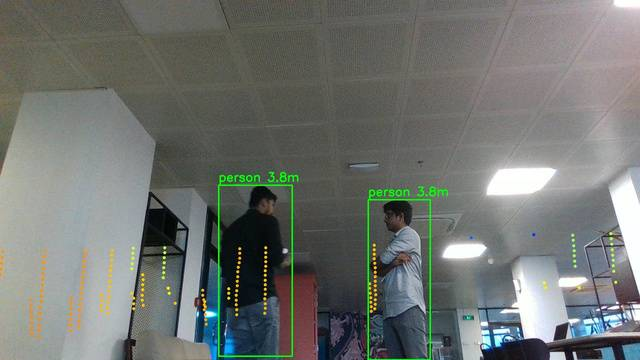
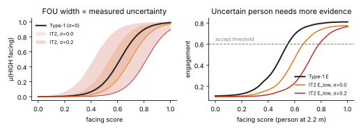

Fuzzy Engagement-Aware Gesture Command Recognition for a Quadruped Robot in Crowds
01The problem
Gesture pipelines answer what the hand is doing, never whose hand it is or who it is meant for. In a lobby or café that means a bystander waving at a friend can stop the robot or send it walking.
We want three behaviours at once:
- Recognise each gesture separately — if two people gesture at the same time, both are seen and attributed to the right person.
- Obey only gestures meant for the robot.
- Ignore the same person when they turn and gesture at someone else.

02Method: two fuzzy layers per person
From Type-1 to Interval Type-2
Type-1 fuzzy logic treats every reading as exact. In our IT2 system each membership function has an uncertain mean, and the width of that band (the footprint of uncertainty) is set per person, per frame from what the sensors report: jitter in the distance estimate, how visible the face and shoulders are, and how stable the facing score has been.
Karnik–Mendel type reduction gives an engagement interval [Elow, Ehigh]. We act on the lower bound, so a clearly visible person facing the robot is obeyed immediately, while a half-occluded or turning person must look much more engaged first. With zero uncertainty, the IT2 system reduces exactly to the Type-1 system, so the comparison isolates the effect of using measured uncertainty.
9 rulesHall's proxemic zonesSTOP has a lower threshold (safety)

03Experiment
All four policies run on the same features in the same frame; one of them drives the dog and all are logged, so every comparison uses identical inputs.
Any confident command gesture from anyone is executed (current practice).
Only the closest person's gesture counts.
Our two-layer fuzzy gate, without and with measured uncertainty.
Scenarios on the real Go2
| Take | Robot | What happens |
|---|---|---|
| S1 | stationary | One commander facing the dog |
| S2 | stationary | Bystanders gesture to each other beside the commander |
| S3 | stationary | Commander and bystander gesture at the same moment |
| S4 | stationary | Commander turns and gestures at a friend, then back at the dog |
| S5 | stationary | Two people gesture at the dog (STOP vs forward) |
| S6 | stationary | Bystanders walk across waving off-camera |
| W1–W3 | walking | Commander drives the dog through bystanders, nearby gestures, occlusion |
Every gesture episode (one person holding one command gesture) was labelled by hand as meant for the robot or not. Metrics: bystander false-trigger rate = share of not-for-robot episodes that the policy would have executed; commander recall = share of robot-directed episodes executed.
04Results


05Videos
A short walkthrough of why gesture control breaks in crowds, how per-person engagement fixes it, and what we tested on the Go2.
Recorded at Rysera, October 2026.
Development
Real Go2 takes
06Team
08Limitations & ethics
- Distance is monocular (from shoulder width); the Go2's built-in LiDAR is not fused yet.
- Small study recorded in one indoor space with a handful of volunteers; numbers are indicative, not definitive.
- Participants gave verbal consent to be recorded; faces are blurred in anything published beyond this page.
- Someone held the robot's remote with a kill switch during every walking take; speed was capped at 0.3 m/s.
09Cite
@misc{bandara2026engagement,
title = {Fuzzy Engagement-Aware Gesture Command Recognition for a Quadruped Robot in Crowds},
author = {Bandara, Kaveeshwara and Fernando, Rivikula and Navarathna, Agra and Kulasinghe, Himasara and Perera, Lasan},
year = {2026},
note = {University of Moratuwa, Rysera Innovations and WSO2}
}
Supported by WSO2. Built on the team's go2-social-nav and lidar-cam-fusion-lab repositories.